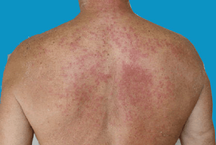

The term ‘light eruption’ is easy to understand - a rash that comes up after exposure to light. ‘Polymorphic’ is more difficult. ‘Poly’ means ‘many’, and ‘morphic’ means ‘forms’. In other words, the rash of PLE can take many different forms, including small red bumps, larger red areas, and blisters. In PLE, a rash with one or more of these components comes up a day or two after exposure to the sun. PLE is common, perhaps affecting up to 10% of the population. It tends to appear in the spring.

Probably not, although about 15% of those who have PLE know of other family members who have it too.
No treatment will get rid of PLE forever. However, many people remain clear if they avoid exposure to the sun and use an effective sunscreen. The tendency to get PLE may go away by itself after a few years.